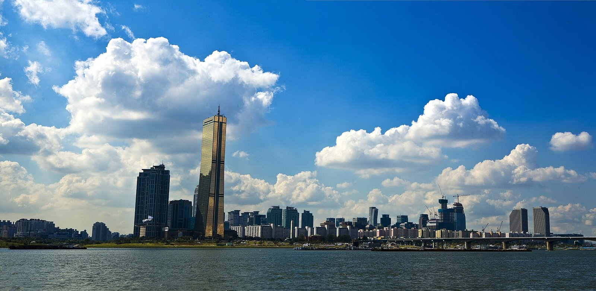

[한일수교 60년㉓] 한국 1인당 소득이 일본을 8112달러 앞질렀다
IMF 2026년 10월 전망, 한국 4만3512달러로 사상 첫 4만달러… 일본은 3만5400달러대
중국은 일본 총리 직함까지 뺐고, 한국과는 FTA 후속협상을 재개했다
RCEP 26조달러의 91%가 한중일인데 셋이 묶은 협정은 없다
일본이 동아시아에서 혼자가 되고 있다. 중국과는 2025년 11월 타이완 발언 뒤 회복되지 않았고, 2026년 9월에는 중국 외교부가 일본 총리의 직함까지 뺐다. 그사이 한국은 중국과 자유무역협정 후속협상을 다시 열었다. 소득에서도 자리가 바뀌었다. 국제통화기금(IMF)이 2026년 10월 내놓은 전망을 보면 한국의 1인당 국내총생산(GDP)이 일본을 8112달러 앞선다.

1. 1인당 4만3512달러, 일본을 넘었다
IMF 2026년 10월 전망을 보면 한국의 1인당 GDP는 2026년 4만3512달러다. 2025년 추산치 3만6408달러보다 7104달러, 19.5% 늘었다. 사상 처음 4만달러를 넘는다.
같은 해 일본은 한국보다 8112달러 낮다. 3만5400달러 안팎이다. 2025년까지는 일본이 한국보다 조금 높았다. 2026년에 뒤집혔고 IMF는 2031년까지 한국이 앞설 것으로 봤다.
대만은 2026년 4만3951달러로 한국보다 439달러 많다. 2027년에는 한국이 대만을 약 1863달러 앞서고, 2030년에 대만이 다시 앞선다는 전망이다.
한국의 명목 GDP는 2026년 2조2458억달러, 2027년 2조5395억달러, 2031년 3조693억달러로 예상된다.
2. 30년 제자리였던 일본
일본의 명목 GDP는 2024년 4조2000억달러 수준이다. 1995년과 비슷하다. 30년 동안 자리에서 움직이지 않았다. 독일은 2023년 4조5200억달러를 기록하며 일본을 처음 넘어섰다. 세계 GDP에서 일본이 차지하는 비중은 4%대로 미국 25.9%, 중국 16.8%, 독일 4.3% 다음이다.
엔화 가치 하락이 큰 몫을 했다. 2023년 일본 내각부는 환율을 달러당 140.50엔으로 잡았으나 실제 평균은 151.30엔이었다.
생산성도 낮다. 일본생산성본부가 2025년 12월 공표한 국제비교를 보면 2024년 일본의 시간당 노동생산성은 60.1달러로 경제협력개발기구(OECD) 38개국 가운데 28위다. 1인당으로는 9만8344달러로 29위다.
반도체에서는 1990년 세계 시장의 절반을 쥐었으나 2024년 설계 분야 점유율은 9%다. 소재와 장비에서는 세계 시장의 30% 안팎을 지킨다. 배터리에서는 중국 CATL과 비야디(BYD)가 절반 넘게, 한국 3사가 30% 안팎을 차지하고 일본 파나소닉은 10% 수준이다.
3. 중국은 일본의 직함을 뺐다
2025년 11월 7일 다카이치 사나에 총리가 중의원에서 타이완 유사시 집단자위권을 쓸 수 있다는 취지로 말한 뒤 중일관계는 내려갔다.
중국은 관영 매체와 정부 발표에서 '일본 집권 당국', '일본 현직 지도자' 같은 표현을 쓰기 시작했다. 2026년 9월 30일 외교부 정례브리핑에서는 궈자쿤 부대변인이 다카이치 총리를 직함 없이 이름으로만 불렀다. 외교부 누리집에 올라온 기록에도 직함이 없었다.
2026년 11월 중국 선전에서 아시아태평양경제협력체(APEC) 정상회의가 열린다. 중일정상회담이 성사될지는 확인되지 않았다. 중국이 초청하지 않을 수 있다는 관측도 나왔다.
반면 한국과 중국은 움직였다. 2026년 3월 18일 한중 상무·산업장관회의에서 공급망 핫라인을 가동하고 FTA 공동위원회를 상반기에 다시 열기로 했다. 8월 31일에는 한중 FTA의 서비스·투자 후속협상을 재개했다. 시장 개방을 더 넓히는 2단계 협상이다.
일본은 한 축을 잃었고 한국은 두 축을 다 쥐었다.
4. RCEP의 91%가 한중일인데
동아시아 경제 질서의 축은 역내포괄적경제동반자협정(RCEP)이다. 2020년 서명해 2022년 발효됐고 한중일에 아세안 10개국, 오스트레일리아, 뉴질랜드까지 15개국이 들어 있다. GDP 합계가 26조달러로 세계의 30.8%, 인구는 22억7000만명으로 세계의 29.7%다.
그 26조달러의 구성을 보면 중국이 18조달러로 69%, 일본이 4조달러로 15%, 한국이 1조7000억달러로 7%다. 세 나라를 합치면 23조7000억달러, 91%다. 아세안 열 나라가 3조6000억달러로 9%, 오스트레일리아와 뉴질랜드가 2조달러다. 사실상 한중일 경제권이다.
그런데 셋을 직접 묶은 협정은 없다. 한중일 FTA는 2012년 11월 20일 협상을 시작해 2019년 11월 16차 협상까지 가고 멈췄다. 센카쿠 영유권 갈등, 강제징용 배상 문제, 코로나19가 겹쳤다. 2025년 3월 30일 한중일 경제통상장관회의가 5년 3개월 만에 열려 협상 재개를 논의했지만 아직 열리지 않았다.
RCEP는 관세 철폐율이 낮다. 한중 사이는 70%, 한일 사이는 80% 수준이고 서비스와 투자 개방도 제한적이다. 대외경제정책연구원은 한중일 FTA로 관세를 90% 넘게 없애면 역내 무역이 20% 늘고 세 나라 GDP가 각각 1~2% 오른다고 분석했다. 12년을 멈춘 대가다.
미국이 빠진 자리도 크다. 2016년 환태평양경제동반자협정(TPP)은 12개국 GDP 합계가 28조달러로 세계의 40%였다. 2017년 미국이 빠지자 2018년 CPTPP로 다시 꾸렸지만 GDP는 11조달러로 줄었다. 중국 한 나라의 18조달러보다 작다. 중국을 막자고 만든 틀이 중국보다 작아진 것이다. 2021년에는 중국이 그 CPTPP에 가입을 신청했다.
5. 독일과 일본이 갈린 자리
일본이 한중과 깊이 묶이지 못하는 까닭은 경제가 아니라 역사다.
1970년 12월 빌리 브란트 서독 총리가 바르샤바 게토 추모비 앞에서 무릎을 꿇었다. 독일은 나치 범죄를 법과 교육으로 청산했다. 기본법 139조가 나치 청산을 명시하고 학교에서 나치 역사를 필수로 가르친다. 1993년 유럽연합 단일시장이 선 바탕이 거기 있다.
일본은 1995년 무라야마 담화로 식민 지배와 침략을 인정했다. 그 뒤로는 물러섰다. 2013년 12월 26일 아베 신조 총리가 야스쿠니 신사를 참배했다. 한국 외교부는 "한일 관계는 물론 동북아 안정과 협력을 근본부터 훼손하는 시대착오적 행위"라고 했다. 2015년 위안부 합의는 2019년 사실상 깨졌다. 다카이치 총리는 무라야마 담화를 "쓸데없는 말"이라 했고, 2026년 8월 4일 첫 방위백서에도 독도를 자기 땅이라 적었다. 2005년 이후 22년째다.
다만 2026년에 달라진 대목도 있다. 다카이치 총리는 2025년 10월 가을 예대제, 2026년 4월 봄 예대제, 2026년 8월 15일 패전일 세 번 모두 야스쿠니를 참배하지 않고 공물만 봉납했다. 총리가 아니라 자민당 총재 자격이었다. 대신 같은 날 고이즈미 신지로 방위상과 자민당 간부들이 참배했다.
총리는 비껴가고 내각과 당은 간다. 한국과 중국이 그것을 사죄로 읽지 않는 이유다.
6. 고립은 선택의 결과다
일본의 자리가 좁아진 것은 외부 사정 때문만이 아니다.
미국은 일본을 중국 견제의 수단으로 쓴다. 2025년 10월 29일 도널드 트럼프 대통령이 일본을 찾았지만 그 길의 목적지는 다음 날 부산에서 열린 미중정상회담이었다. 일본은 5500억달러 투자를 약속했고 재협상 없이 그대로 갔다.
중국과는 직함마저 사라졌다. 러시아와는 북방영토로 대립하고 북한은 핵으로 위협한다. 남은 것이 한국인데, 그 한국과도 독도와 역사에서 부딪친다.
한국은 반대다. 미국과 반도체로 묶이고 중국과 FTA 2단계를 열었다. 인도태평양경제프레임워크(IPEF)에 들어가면서 RCEP도 비준했다. 중국과 일본 양쪽 모두와 통화스왑을 가진 나라는 한국뿐이다. 한일 100억달러 통화스왑은 2026년 10월 15일 방콕에서 2029년 11월까지 연장됐다.
1인당 소득이 뒤집힌 것은 결과일 뿐이다. 더 중요한 것은 누가 몇 개의 문을 열어 두고 있느냐다. 한일수교 61년째, 그 셈이 달라졌다.
참고문헌
·"韓 1인당 GDP 첫 4만 달러 전망… 日 추월, 대만과 양강 구도", 아주경제, 2026년 10월 13일(IMF 2026년 10월 전망). https://www.ajunews.com/view/20261013211919790
·"한·중, FTA 서비스·투자 후속협상 재개…시장개방 속도", 아시아경제, 2026년 8월 31일. https://view.asiae.co.kr/article/2026083107224370477
·"한중, 상무·산업장관회의…공급망 핫라인 가동·상반기 FTA 공동위 재개", 연합뉴스, 2026년 3월 18일.
·"中, 다카이치 '총리' 호칭 뺐다", 아시아경제, 2026년 10월 3일.
·"다카이치 첫 방위백서에 '독도는 일본 땅'…22년째 억지 주장", 경향신문, 2026년 8월 4일.
·"한일, 100억弗 규모 통화스와프 3년 연장", 파이낸셜뉴스, 2026년 10월 15일.
·日本生産性本部, 「労働生産性の国際比較2025」, 2025년 12월.
·"5년만에 만난 한중일 통상장관…3국 FTA 협상 추진", 머니투데이, 2025년 3월 30일.
·대한민국 정책브리핑, 「RCEP 개요」.
·대외경제정책연구원, 「한·중·일 FTA의 경제적 효과」.